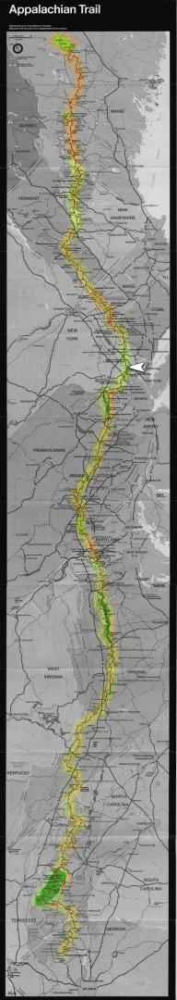

| Home | The Fox | Statistics | Maps | Churches |
StatusConfirmed - Last contact with the Fox was at:Confirmed - the Hudson River, NY Confirmed - 1378.9 miles complete (63.83%) Confirmed - 781.3 miles to go (36.17%) Stormville[25 June 1999] The Fox reported in from Stormville, New York on Friday morning. He got to eat pizza with fellow hikers at the shelter Thursday night, after a neighbor living by the trail took two of the hikers to the pizza store and they arranged to have some delivered right to the shelter. This is apparently a common practice at shelters with convenient access to roads and phones, although this was the Fox's first order-out pizza on the trail. He ate parts of both a sausage and a mushroom pizza.
Saturday was expected to be a hot Hudson River[23 June 1999] Our latest report comes from the Hudson River, where the Fox reported that he has crossed into New York state. The state border was indicated only by a white line painted on a rock. The sun has been hot on those occasions when the path reached a clearing or a hilltop; but most of the Fox's journey into New York has been through shady woods. He guesses that there the Appalachian hills rise only aboutOverall he says that New York and New Jersey are quite boring. He found the New York portion of the AT unimpressive, sending him right up and down steep inclines and unmodified rock faces - of course, the Fox is from California, where at parks like Yosemite dynamite is used to carve trails. The weather has been clear since the rain cleared up Monday morning. When he spoke to us Thursday he was planning to eat lunch at the Bear Mountain Inn, and cross the Hudson to continue across New York. |

Legend
|